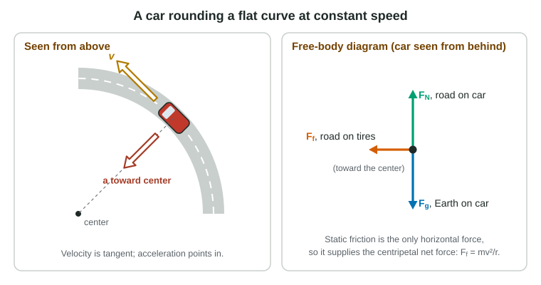

Circular Motion
Circular motion at constant speed is accelerated motion: a_c = v²/r toward the center, with v = 2πr/T.
Part 1 · Hook
Why this matters
Part 2 · Before you start
What this builds on
Part 3 · Prerequisite check
Quick check before you start
1. An object's speed stays the same but its direction changes. It is
- accelerating
- in equilibrium
- at constant velocity
- unaffected by any net force
Show the answer
Any change in velocity, size or direction, is an acceleration.
- Correct: accelerating:
- in equilibrium:
- at constant velocity:
- unaffected by any net force:
2. An object with nonzero net force on it
- accelerates in the direction of the net force
- moves in the direction of the net force
- keeps its velocity
- slows to a stop
Show the answer
Newton's second law: a = ΣF/m, along ΣF.
- Correct: accelerates in the direction of the net force:
- moves in the direction of the net force:
- keeps its velocity:
- slows to a stop:
3. The gravitational force between two masses is
- Gm₁m₂/r²
- Gm₁m₂/r
- mg at any distance
- zero in orbit
Show the answer
Newton's law of universal gravitation.
- Correct: Gm₁m₂/r²:
- Gm₁m₂/r:
- mg at any distance:
- zero in orbit:
Part 4 · See it
See it first

Part 5 · Step by step
How it works, step by step
- An object moves in a circleits velocity direction changes continuously, so it accelerates even at constant speed
- The speed is v and the radius rthe centripetal acceleration points to the center with size a_c = v²/r
- Newton's second law applies along the radiusthe real forces must add to a net force toward the center of size mv²/r
- That net force disappears (the string breaks)the object moves off in a straight line along the tangent
Part 6 · Key ideas
Key ideas
- Uniform circular motion: constant speed v = 2πr/T on a circle; the acceleration ac = v²/r points to the center. The period T is the time for one trip; the frequency f = 1/T, in Hz.
- The centripetal net force, ΣF toward the center = mv²/r, is supplied by real forces: tension, friction, normal force, gravity, or their parts. Never draw it as an extra arrow.
- Speeding up or slowing on a circle adds a tangential acceleration; the total is the vector sum.
- Circular orbits: GMm/r² = mv²/r gives v = √(GM/r) and Kepler's third law, T² = (4π²/GM)r³.
Part 7 · Misconception
A common mistake
The wrong idea: An object moving in a circle has a centripetal force pulling it in and a centrifugal force pushing it out, and both go on the free-body diagram.
What actually happens: Only real forces go on the diagram. "Centripetal" names the job of the net force toward the center; there is no outward force. A released object leaves along the tangent, not outward.
Part 8 · Check yourself
Check yourself
Exam-style questions. Anything you miss goes into your review queue.
Diagram
A puck on a string
A 0.40 kg puck slides in a horizontal circle of radius 0.50 m on a frictionless table, held by a light string tied to a peg at the center. It makes 2.0 revolutions each second at a constant speed.
1. What is the speed of the puck, in m/s?
Type a number in m/s.
Show the answer
The period is T = 1/f = 1 ÷ 2.0 s⁻¹ = 0.50 s. In one period the puck goes once around: v = 2πr ÷ T = 2π(0.50 m) ÷ 0.50 s = 6.3 m/s.
- Answer: 6.3 m/s
2. What is the tension in the string, in newtons?
Type a number in N.
Show the answer
The string's pull is the only horizontal force, so it supplies the centripetal net force: F_T = mv²/r = (0.40 kg)(6.28 m/s)² ÷ 0.50 m = 32 N (31.6 N).
- Answer: 32 N
3. The string breaks at the moment shown in the diagram. Which path does the puck follow next, seen from above?
- A straight line along the velocity arrow
- A straight line outward, along the line from the peg
- It keeps moving around the same circle
- A curve that spirals slowly outward
Show the answer
With the string gone, no horizontal force acts on the puck. By the first law it keeps its velocity at that instant, which is tangent to the circle, and moves in a straight line.
- Correct: A straight line along the velocity arrow: Right: zero net force, constant velocity, along the tangent.
- A straight line outward, along the line from the peg: Nothing pushes it outward; there is no outward force. It only looks like it "flies out" because the circle curves away from its straight path.
- It keeps moving around the same circle: Going around a circle needs a net force toward the center; without the string there is none.
- A curve that spirals slowly outward: Any curved path needs a sideways force; with none, the path is straight.
4. Which free-body diagram of the puck, drawn from the side, is correct?
- F_T toward the peg, F_N up and F_g down
- F_T toward the peg, a centripetal force toward the peg, F_N up and F_g down
- F_T toward the peg, an outward force, F_N up and F_g down
- F_T toward the peg, a forward force along v, F_N up and F_g down
Show the answer
The puck touches the string and the table, and Earth pulls on it: three forces. The string's pull is the centripetal net force; "centripetal" names a role, not an extra force.
- Correct: F_T toward the peg, F_N up and F_g down: Right: only real forces with agents.
- F_T toward the peg, a centripetal force toward the peg, F_N up and F_g down: This counts the string's pull twice. The centripetal net force IS the tension here; it is not a separate arrow.
- F_T toward the peg, an outward force, F_N up and F_g down: There is no outward force with an agent; the puck tends to go straight, which is not a force.
- F_T toward the peg, a forward force along v, F_N up and F_g down: Nothing pushes the puck forward; at constant speed no force acts along the velocity.
Diagram
A car over a hill
A 1200 kg car drives over the crest of a rounded hill at a constant speed of 12 m/s. Near the crest the road follows a vertical circle of radius 45 m. Use g = 9.8 m/s².
5. What is the normal force of the road on the car at the crest, in newtons?
Type a number in N.
Show the answer
At the crest the center of the circle is below the car, so the net force must point down: mg − F_N = mv²/r. F_N = m(g − v²/r) = 1200 kg × (9.8 − 144/45) m/s² = 1200 kg × 6.6 m/s² = 7900 N (7920 N).
- Answer: 7.9 × 103 N
6. A car rounds a flat, unbanked curve at a constant speed. Which force supplies the centripetal net force?
- Static friction from the road on the tires
- Kinetic friction from the road on the tires
- The normal force from the road
- The engine's forward push
Show the answer
The tires do not slide sideways, so the road's sideways grip is static friction, pointing toward the center of the curve. It is the only horizontal force pointing inward.
- Correct: Static friction from the road on the tires: Right: static friction toward the center.
- Kinetic friction from the road on the tires: Kinetic friction would mean the tires skid sideways.
- The normal force from the road: On a flat road the normal force is vertical; it balances the weight.
- The engine's forward push: A forward force along the road cannot turn the car; the turning force must point sideways, toward the center.
Part 9 · Summary
Summary
Part 10 · Up next
What comes next
Part 11 · Connections